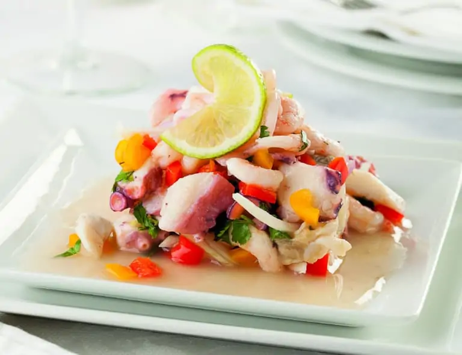
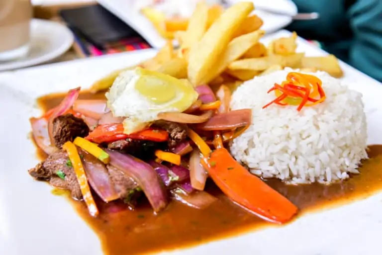

¿dudas sobre que comeras?
no te preocupes ya que contamos con un
ampleo menu con comida exoticas y gastronomicas del mejor paises con la mejor gastronomia
contamos con:
1.Ceviche
El plato nacional de Perú, el ceviche se considera generalmente la mejor comida peruana en todo el mundo.
A primera vista, es una simple receta de pescado crudo marinado en zumo de cítricos. Sin embargo, las
especias del adobo y los acompañamientos hacen que el plato sea completo.
El pescado blanco crudo, como la lubina, se cura en zumo de lima y se mezcla con cebolla roja en rodajas
finas, chiles y sal. El maíz peruano conocido como choclo y las rodajas de boniato acompañan el plato para
darle aún más sabor. El plato es fresco y ácido, con un toque picante. Los vegetarianos y veganos de Perú
también pueden apreciar el rico sabor en una variante de setas.

2.Lomo Saltado
El chifa es una cocina popular peruana que combina ingredientes y técnicas locales y chinas. Este estilo de
cocina se remonta a principios del siglo XX, cuando una oleada de inmigrantes chinos llegó a Perú. El plato
más popular del chifa, el lomo saltado, es un plato abundante y lleno de sabor.
El lomo saltado es una robusta mezcla de carne de vacuno, tomates, pimientos y cebollas que se cocina en una
sartén con una mezcla de salsa de soja. La mayoría de las variantes se sirven sobre patatas fritas (o incluso
se añaden al salteado) y se acompañan de arroz blanco. Hoy en día, puedes encontrar este plato no sólo en los
restaurantes chifa, sino en muchos restaurantes peruanos de todo el país.

3.Ají de Gallina
Este plato, que consiste en un tierno pollo guisado en una rica salsa de chile amarillo, es un clásico criollo.
En realidad, Gallina significa gallina en español, pero la mayoría de los cocineros utilizan pollo en este plato.
Además del pollo, un ingrediente clave es el ají amarillo. Este pimiento da a la salsa su color amarillo y añade
un increíble toque de picante. Otros ingredientes, como el queso y las galletas saladas, atenúan el picante y crean
una salsa espesa y cremosa. Como muchos otros platos peruanos, el ají de gallina se combina con patatas y/o arroz
blanco.
Este plato es cursi, con sabor a nuez, picante y absolutamente delicioso. Lleva un tiempo prepararlo, pero los
resultados merecen la pena.

4.Pollo a la Brasa
El pollo asado al estilo peruano, conocido como pollo a la brasa, es increíblemente popular en Perú. Combinado
con patatas fritas, ensalada y una deliciosa salsa de ají amarillo, una comida de pollo a la brasa es la favorita de la familia.
La clave es marinar el pollo en salsa de soja con pimientos rojos, ajo y comino para dar a la carne y la piel un sabor ahumado
y salado. A continuación, los cocineros cocinan el pollo marinado sobre brasas y lo sirven entero. Esta receta peruana emblemática
se utiliza en todo el país, e incluso está empezando a ponerse de moda también fuera de Perú.
Aunque este plato se suele comer en las pollerías (restaurantes de pollo), puedes conseguir un sabor similar en casa en la parrilla o en el horno.

mas comidas proximamente